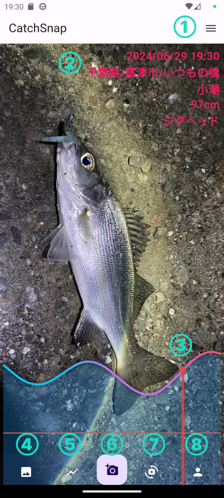
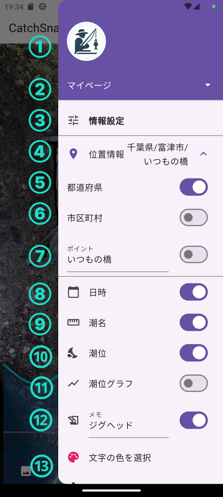
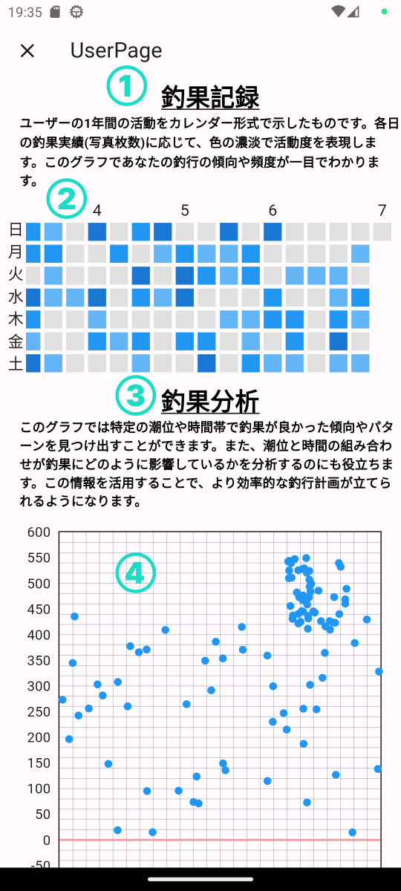
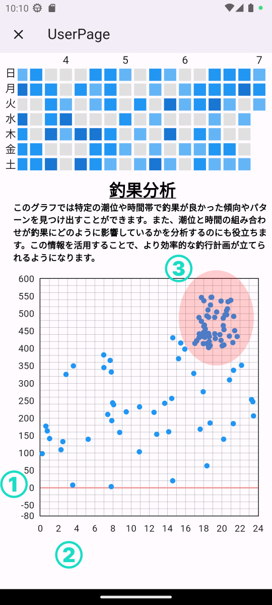
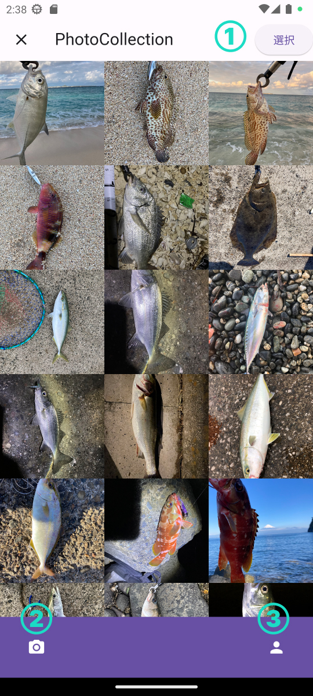
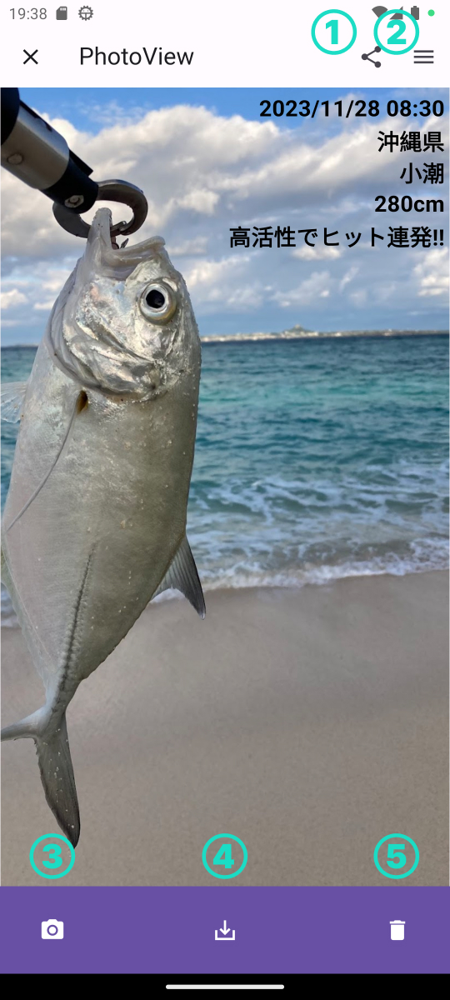
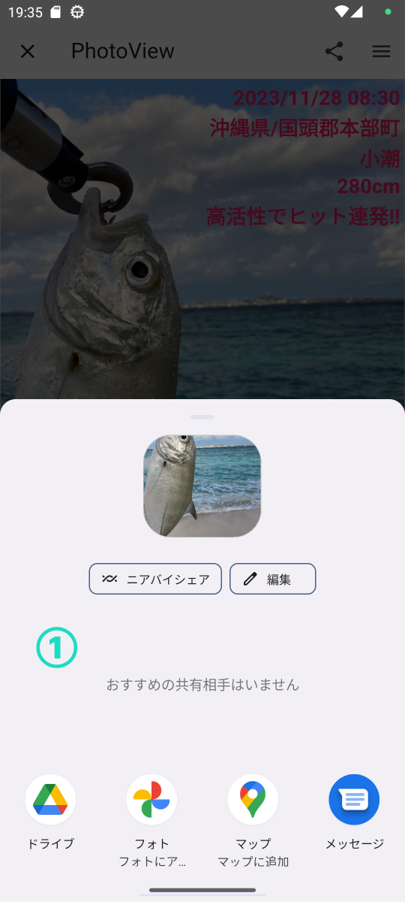

メイン
メイン画面です。この画面で撮影・記録を行います。
撮影時に位置情報・潮位・現在時刻を取得しデータ化します。
①表示メニューを開くボタン
②記録した情報の表示プレビュー
③現在時刻の潮位グラフプレビュー
④釣果コレクション画面へ遷移するボタン
⑤プレビューの表示・非表示切り替えボタン
⑥撮影ボタン
⑦インカメラ・背面カメラの切り替えボタン
⑧ユーザーページへの遷移ボタン
設定メニュー
設定メニューです。この画面で表示項目のON/OFFを切り替えます。ポイントとメモの編集が可能となっています。
①ユーザーアイコン(未実装なので全員共通)
②ユーザーページへのリンク
③情報設定メニュータイトル
④位置情報のプレビュー表示
⑤都道府県の表示切替ボタン
⑥市区町村の表示切替ボタン
⑦ポイントの表示切替ボタン
⑧日時表示切替ボタン
⑨潮名切替ボタン
⑩潮位表示切替ボタン
⑪潮位グラフ表示切替ボタン
⑫メモ表示切替ボタン
⑬画像に表示する文字の色を選択するボタン
ユーザーページ
ユーザーページです。釣果データをまとめていて自分の釣行スタイルや得意な状況などを分析することができます。
現在のバージョンでは釣行記録と釣果分析グラフを実装しています。
釣果記録は、色の濃淡で活動度を表現しています。グレーは0釣果の日で一番濃い色は10匹以上の釣果を表現しています。
釣果分析は横軸に時間、縦軸に潮位のグラフになっています。このグラフに釣果データを当てはめることによって自分の得意な状況やフィールドの特性を導き出すことができます。
①釣果記録の解説
②釣果記録をグラフで表現
③釣果分析の解説
④釣果分析グラフ
ユーザーページ 釣果分析グラフ
釣果分析グラフ。縦軸に潮位、横軸に時間をとるグラフです。潮位0㎝には赤いラインを引いています。
画像のデータを分析してみると、赤い楕円の周辺に釣果が集中していることがわかります。つまり、17～22時の間の比較的潮位が高い時間に釣果を上げているということです。
このように、今まで感覚でしかなかった釣果をデータにより根拠のあるものにすることでその後の釣行スタイルや釣行計画を立てるヒントになります。
フォトコレクションページ
フォトコレクションページです。このアプリで撮影された写真はアプリ内で保存されます。端末のアルバムを開く必要はありません。
①選択ボタン：複数画像の選択ができるようになる
②メイン画面遷移ボタン
③ユーザーページ遷移ボタン
フォトビューページ
フォトビューページです。写真を釣果データとともに見る画面です。オプションにより表示内容を切り替えることができます。こちらの画像では潮位グラフが非表示となっています。
①共有ボタン : SNS等への共有ができるボタン
②設定メニュー表示ボタン : 表示データのON/OFFやメモの編集ができます
③メイン画面遷移ボタン
④保存ボタン：表示状態で端末に保存ができます
⑤削除ボタン：釣果データの削除ができます
共有時の画面
共有時の画面です。こちらはお使いの端末の仕様に依存します。各種SNSやサービスへの共有が可能になります。
①この領域にSNSやサービス、アプリなどが表示されワンタッチで投稿などができます。